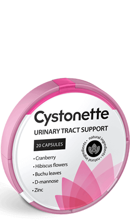

Cystonette
efektivní řešení intimního problému

 Léčba infekčních a zánětlivých procesů
Léčba infekčních a zánětlivých procesů Účinné proti patogenním mikroorganismům
Účinné proti patogenním mikroorganismům Zmírňuje příznaky bolesti
Zmírňuje příznaky bolesti Léčí to i chronickou formu onemocnění
Léčí to i chronickou formu onemocněníKdyž se objeví charakteristické příznaky
musíte jednat velmi rychle!
Časté nutkání na záchod
Pálení, bolesti a svědění v močové trubici
Bolest v podbřišků nebo bederní oblasti
Krev v moči
Nepříjemný zápach moči
Horečka, nevolnost nebo zvracení
Tato témata může být velmi intimní a osobní, ale problém je velmi vážný.
Cystitida je zánět močového měchýře, infekování sliznic organismu. Hlavním příznakem je časté bolestivé močení. Může dojít ke zvýšení tělesné teploty, výskytu krve v moči. Téměř každá žena čelí tomuto problému během svého života. Tedy velká většina.
MUDr.Antonín Janásek urolog, má 15 letou praxi
Proč jsou ženy častěji postiženy cystitidou?
Specifika dámská anatomie: ženská močová trubice je kratší a rovnější než u mužů.
Tímto infekce snadno pronikají do močového měchýře.
To je nejčastější příčinou cystitidy
NELÉČTE SE ALE SAMOSTATNĚ, TO MŮŽE UŠKODIT VAŠEMU ORGANISMU
Toto je nejčastější příčina toho, že se cystitida stává chronickou .
Je mnohem obtížnější léčit nemoc, která byla dlouhou dobu špatně léčena: antibiotika by měla být užívána s maximální zodpovědností, nesystematická a nesprávná léčba přivádí k situaci, kdy přestávají fungovat ledviny. Zkuste Cystonette – to je bylinný přípravek, který používám ve své lékařské praxi, a je účinný v každé fází cystitidy, včetně chronických případů. Během používání tohoto rostlinného přípravku odstraňuje bakteriální a patogenní flóru, normalizuje funkci ledvin a zmírňuje bolesti. Lék je vhodný i pro preventivní léčbu.

MUDr.Antonín Janásek urolog, má 5 letou praxi
Názor pacienta

Jana, 38 let Trpěla cystitidou déle než rok.
Poprvé tato nemoc se u mě objevila po sexu. Na začátku to u mě způsobovalo jen nepohodlí, pak bolest byla taková, že jsem se nemohla ani pohnout. Šla jsem do lékárny a koupila poprvé antibiotikum. Velmi to pomohlo, ale bohužel jen dočasně. O měsíc později se u mě opakovál stejný příběh a znovu jsem musela kupovát antibiotikum. Počtvrté už antibiotikum mě nezabral: ležela jsem několik dní se strašnou bolestí a horečkou, pak jsem šla k doktorovi a ten mi zase předepsal antibiotika! Velmi jsem se rozzlobila, že neumí léčit lidí. Pak jsem našla článek o Cystonette, objednala jsem ten přípravek. Už rok a půl žádné příznaky této infekce nejsou. Šest měsíců později jsem zase šla k urologovi na vyšetření, krévní testy jsem měla perfektní. Díky bohu, trápení se skončilo, teď jsem se vrátila do normálního života.

Máya, 64 let Měsíc a půl zpátky cystitida porušila veškeré moje plány.
Byli jsme na dovolené s dcerou, a pak se stalo nepříjemné překvapení – nepřijemný pocit pálení v podbříšků - zejména když jsem chodila na záchod. Trpěla jsem tím ještě více než «přechodem» kvůli menopauze. Šla jsem k doktorovi, kterého mi doporučil kolega. Podle výsledků krévních testů, doktor diagnostikoval u mě zánět močového měchýře v období začínajicí se menopauzy. Doktor vysvětlil, že cystitida není u menopauzy neobvyklá ale předepsal Cystonette pro úlevu a zlepšení celkového zdravotního stavu. Po prvním použití jsem úplně zapomněla na tuto nemoc a doufám, že to znovu nezažiju.

Arnošt Janousek, 49 let Trpěl jsem chronickou cystitidou od dětství.
3-4krát ročně docházelo k inkontinenci, to je ten pocit když z bolesti pod břichem jsem chtěl radějí zemřít, a bolelo mi to strašně, i když jsem chodil na záchod. Po dalším vyšetření doktor řekl že mám vezikoureterální reflux – když se moč vrácí zpět do ledvin. Byl jsem velmi vyděšený a naštvaný. Našel jsem jiného lékaře, který mi předepsal Cystonette. Po týdnu byly všechny příznaky pryč a úleva, kterou jsem pocítil - bylo to boží! Po léčbě přípravkem Cystonette byla cystitida v minulosti.
ALE PROSÍM POZOR!
Počet balíků pro efektivní požadovaný výsledek, je určen individuálně a v některých případech se může zvýšit.
Cystonette
efektivní řešení intimního problému